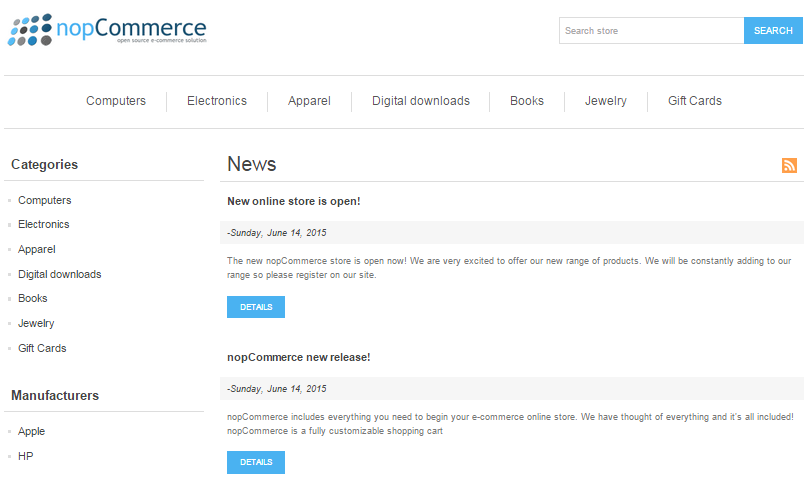
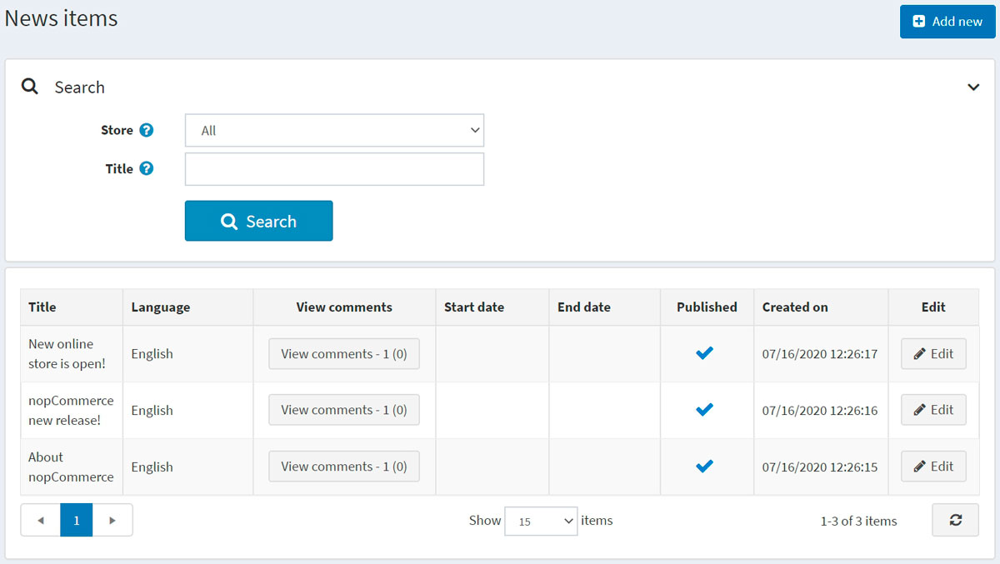
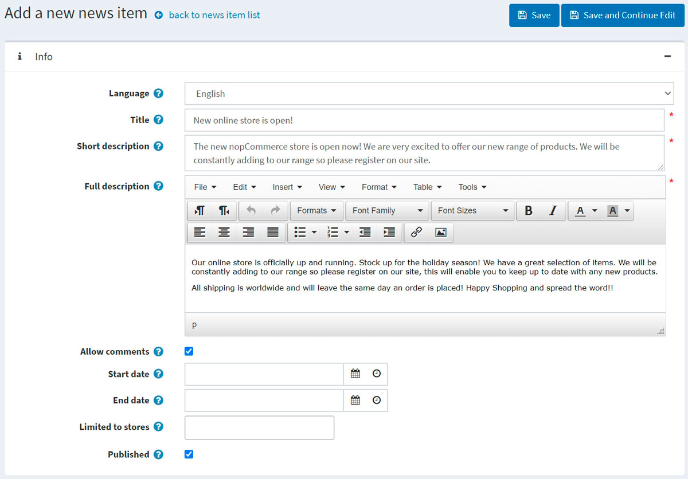
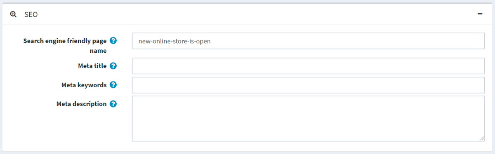
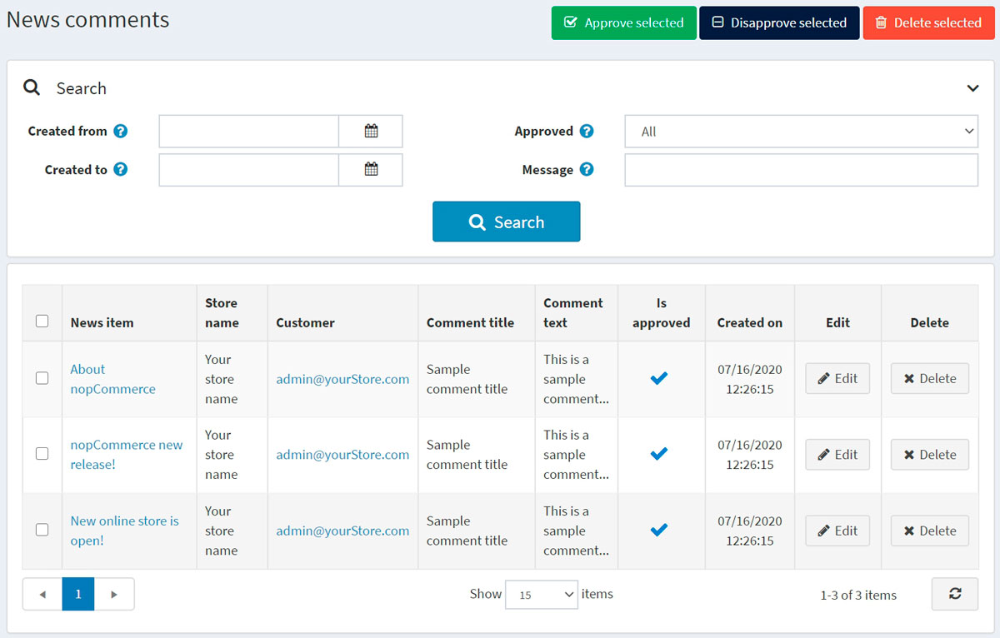
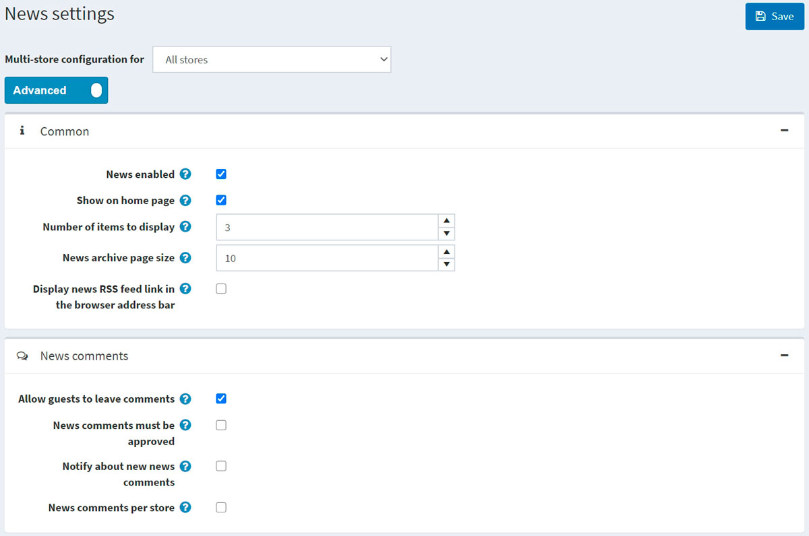

新聞
nopCommerce 允許您在商店中發布新聞。您可以發布任何重要訊息，例如 nopCommerce 的最新版本資訊、公司更新等。
新聞將會顯示在您商店的首頁或網站頁尾選單中。

若要管理新聞，請前往 內容管理 → 新聞項目。所有新聞的列表將會顯示如下：

新增新聞
若要新增一則新聞項目，請點擊 編輯 按鈕並填寫新聞項目的相關資訊。

資訊
在「資訊」面板中，定義以下新聞項目細節：
若啟用了多種語言，請從 語言 下拉式選單中選擇此新聞項目的語言。顧客將只能看到他們所選語言的新聞。
輸入此新聞項目的 標題。例如：「我們新的 nopCommerce 商店正式上線」。
在 簡短描述 欄位中，輸入此新聞項目的摘要。這是訪客在公開商店的新聞列表中會看到的文字。
在 完整描述 欄位中，輸入此新聞項目的內文。
勾選 允許留言 核取方塊，以允許顧客針對該新聞項目新增留言。
輸入此新聞項目顯示的 開始日期 與 結束日期（以協調世界時間 UTC 為準）。
Note
如果您不想定義新聞項目的開始與結束日期，可以將這些欄位留空。
在 限制於商店 欄位中選擇商店，以僅針對特定商店啟用此新聞項目。如果不需要此功能，請將該欄位留空。
Note
為了使用此功能，您必須停用以下設定：目錄設定 → 忽略「每個商店的限制」規則 (全站)。閱讀更多關於多商店功能的內容 here。
勾選 已發布 核取方塊，以將此新聞項目發布到您的商店中。
在編輯現有的新聞項目，或是為新項目點擊 儲存並繼續編輯 按鈕後，您可以點擊右上角的 預覽 按鈕，查看該新聞項目在網站上的顯示樣貌。
SEO
在 SEO 面板中，定義下列新聞項目細節：

- 定義 搜尋引擎友善頁面名稱（Search engine friendly page name）。例如，輸入 "the-best-news" 可使您的 URL 變為
http://yourStore.com/the-best-news。若將此欄位留空，系統將根據新聞標題自動產生。 - 在 Meta 標題（Meta title）欄位中覆寫頁面標題（預設標題為該新聞項目的標題）。
- 輸入 Meta 關鍵字（Meta keywords），這些關鍵字將被加入到新聞項目的標頭（header）中。它們代表該頁面最重要的主題，是一份簡短且精確的列表。
- 輸入 Meta 描述（Meta description），這些描述將被加入到新聞項目的標頭中。Meta 描述標籤是對頁面內容的簡短且精確的摘要。
管理新聞留言
若要管理新聞留言，請前往 內容管理 → 新聞留言。

使用 核准所選 按鈕來核准所選的留言，並使用 取消核准所選 來取消對留言的核准。 您也可以編輯或刪除留言。一旦刪除，該留言將會從系統中移除。
新聞設定
您可以在 設定 → 設定 → 新聞設定 中管理新聞設定。此頁面提供兩種模式：進階 與 基本。
此頁面支援多商店設定；這意味著您可以為所有商店定義相同的設定，或者為不同商店定義不同的設定。如果您想管理特定商店的設定，請從多商店設定下拉式清單中選擇該商店名稱，並勾選左側所需的核取方塊，即可為其設定自訂值。有關更多詳細資訊，請參閱 多商店。

一般設定
定義以下 一般 設定：
- 勾選 News enabled 核取方塊以啟用商店中的新聞功能。
- 勾選 Show on home page 以便在商店首頁顯示您的新聞項目。
- 輸入要在首頁顯示的 Number of items to display（項目數量）。
- 輸入 News archive page size（新聞封存頁面大小）。這是單一頁面上顯示的新聞數量。
- 勾選 Display news RSS feed link in the browser address bar 以便在顧客的瀏覽器網址列中啟用新聞 RSS 訂閱連結。
新聞評論
定義以下 新聞評論 設定：
- 勾選 允許訪客發表評論 核取方塊，以允許未註冊的使用者在新聞下方新增評論。
- 若新聞評論必須經由管理員核准，請勾選 新聞評論必須經過核准 核取方塊。
- 若要通知商店負責人有新的新聞評論，請勾選 通知有新的新聞評論 核取方塊。
- 若要僅顯示在目前商店所撰寫的新聞評論，請勾選 每個商店的新聞評論 核取方塊。
點擊 儲存。